Dans la Grèce Antique, on avait l’habitude de dire que la lumière provenait des yeux pour identifier les objets comme on le voit dans les dessins animés.
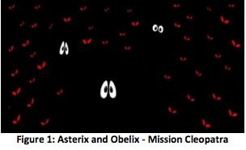
Cette affirmation est fausse. En effet, nous pouvons voir les objets parce qu’ils nous renvoient une partie de la lumière qu’ils reçoivent. On ne peut pas voir un objet qui ne reçoit pas de lumière car il sera dans l’incapacité de la réfléchir vers nos yeux. C’est le cas d’un objet dans le noir.
Par contre, nous pouvons voir certains objets car ils émettent de la lumière. C’est le cas du soleil, des étoiles, des ampoules, des bougies et des flammes : c’est ce que nous appelons des sources de lumières primaires.
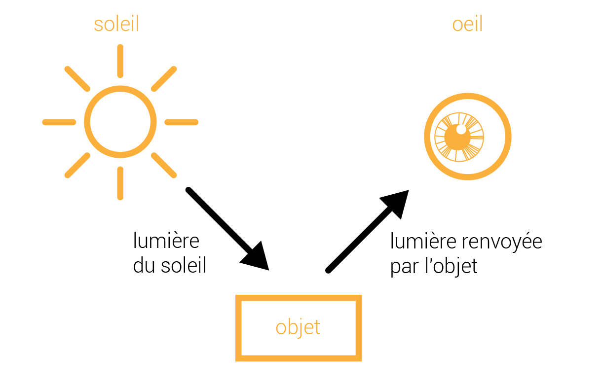
En 1666, lors de ses expériences d'optique, Newton fait passer de la lumière solaire blanche à travers un prisme. Il s’aperçoit à la sortie du prisme que cette lumière blanche se décompose en plusieurs lumières de couleurs différentes. Ce sont les couleurs de l’arc en ciel.
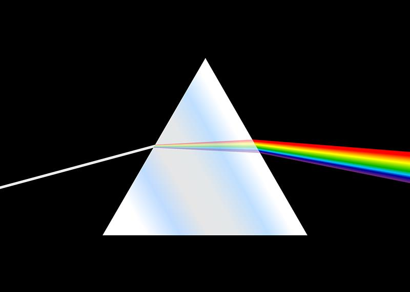
| 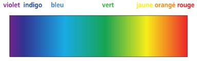 |
Newton comprend avec cette expérience que la lumière blanche se sépare en ses composantes parce que chaque rayon de couleur est dévié de façon différente par le verre du prisme. Ainsi, il constate, par exemple, que la lumière rouge est toujours moins déviée que la lumière violette.
Newton comprend par conséquent que lorsque de la lumière blanche passe d'un milieu transparent (comme de l'air) à un autre (comme du verre), ses composantes sont déviées une première fois selon leur couleur et lorsque celles-ci émergent dans l'air, elles sont de nouveau déviées, donnant ainsi naissance à un étalement de rayons lumineux allant du rouge au violet, comme les couleurs de l'arc-en-ciel.
Lorsque le soleil éclaire une fine bruine (près de chutes d'eau par exemple) ou que l'atmosphère chargée de fines gouttelettes, vous pouvez observer un arc-en-ciel. En réalité, les gouttelettes jouent le rôle de mini-prismes. La lumière blanche entre dans la gouttelette ronde, se réfléchie, puis ressort. Elle y est "décomposée".
Quand une lumière incidente arrive sur l’interface entre deux milieux par exemple l’air et l’eau, nous constatons deux choses :
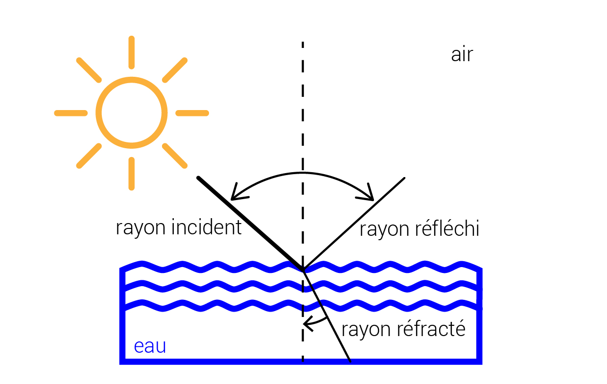
Par ailleurs, il faut distinguer deux types de réflexion :
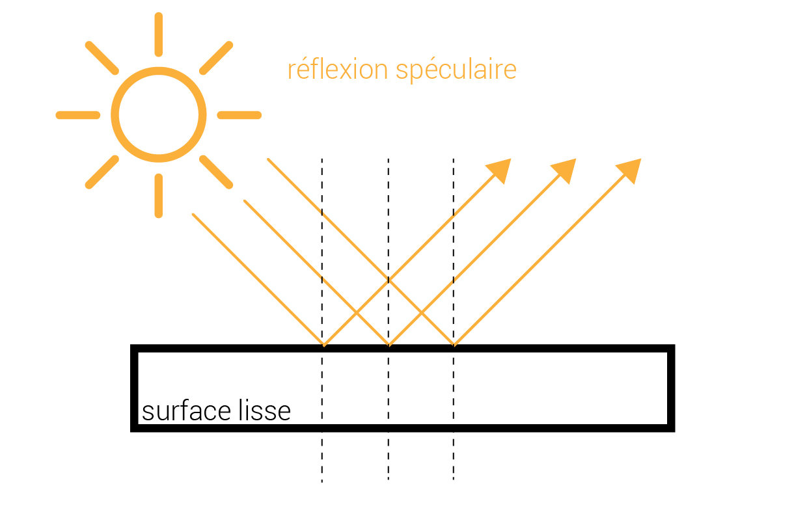 Les rayons sont réfléchis dans une direction liée à l’angle avec lequel ils ont frappé l’objet, un peu comme une boule de billard tapant sur une bande.
|
|
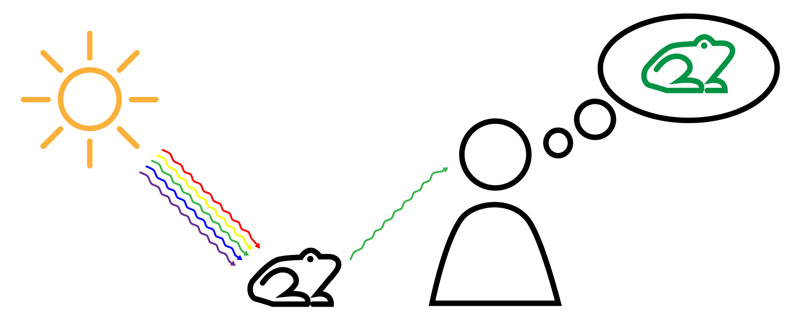
En éclairant une surface blanche, la quasi-totalité des rayons lumineux d’une lumière blanche est réfléchie.
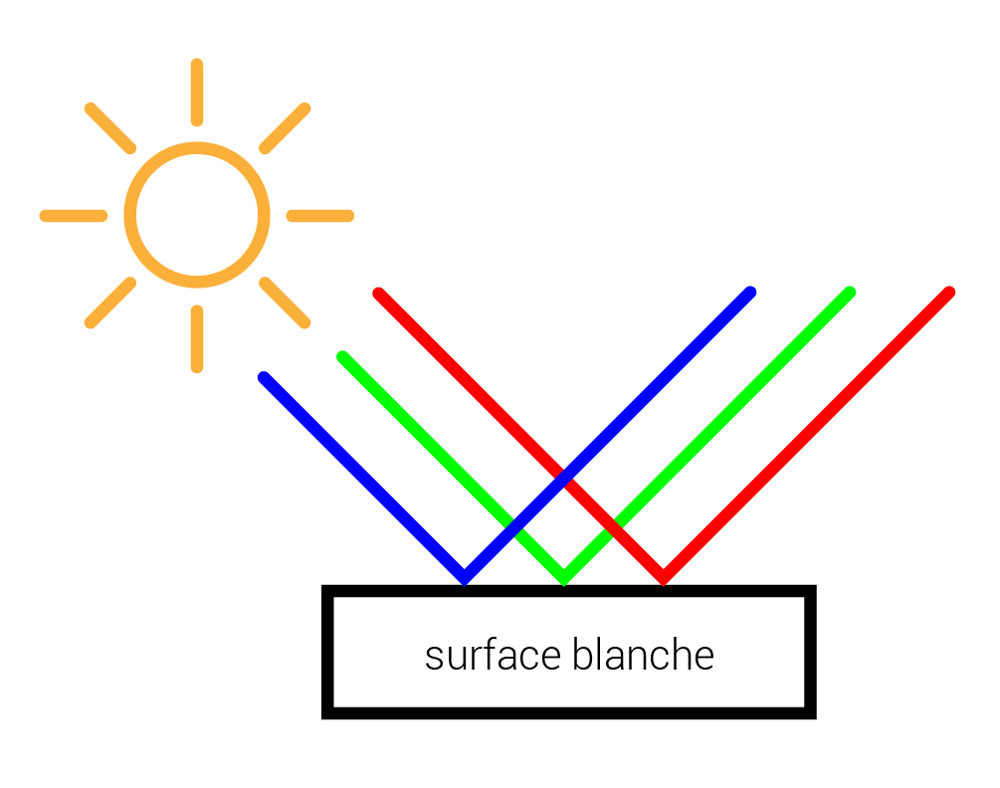
En éclairant une surface noire, il n’y a pratiquement pas de lumière réfléchie car la surface y absorbe les rayonnements. L’absence de lumière au niveau de l’œil de l’observateur est traduite par le cerveau comme une couleur noire.
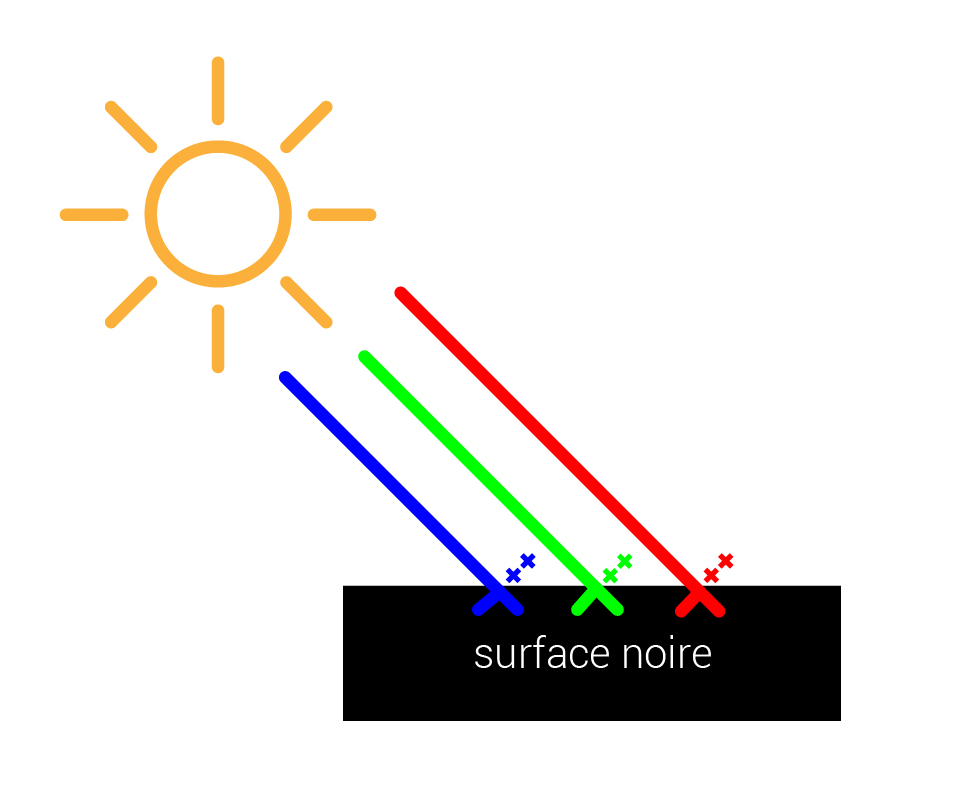
Comment se comporte un sujet de couleur soumis à une lumière blanche ?
En éclairant une surface bleue (ou autre), la matière absorbe les autres couleurs et les transforme en chaleur. Seul le rayonnement bleu diffusé peut parvenir à l’œil de l’observateur. Cet objet nous paraît bleu.
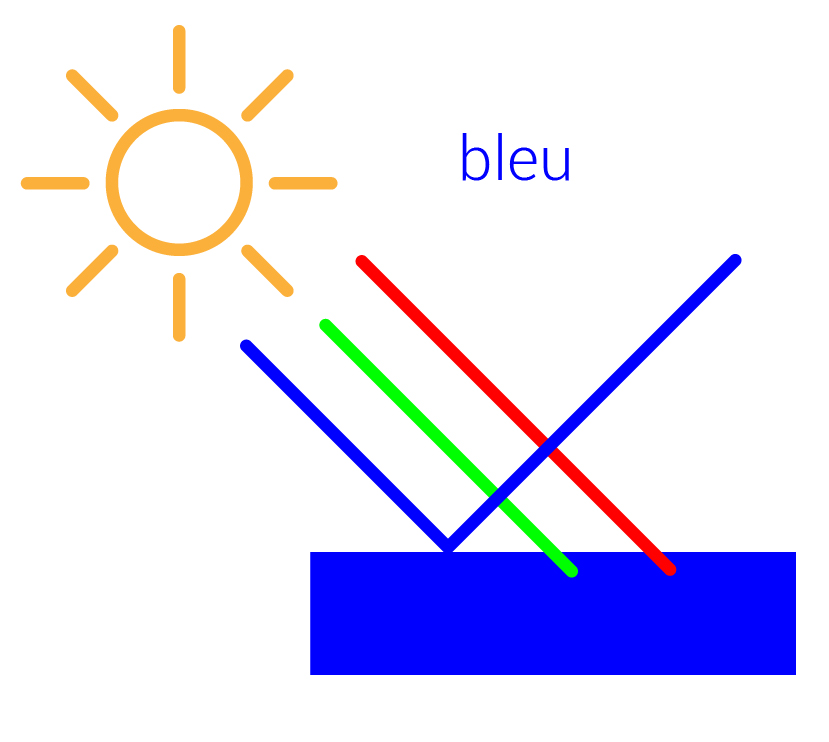 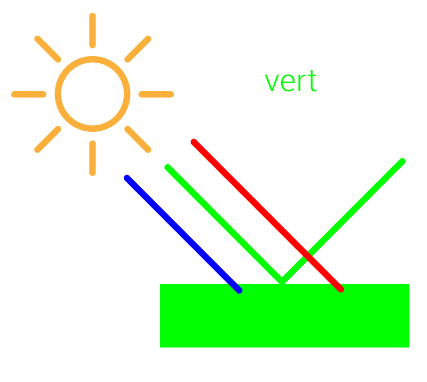 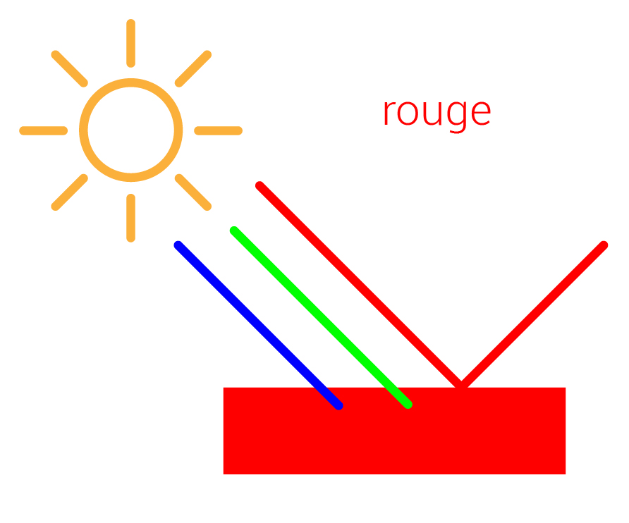